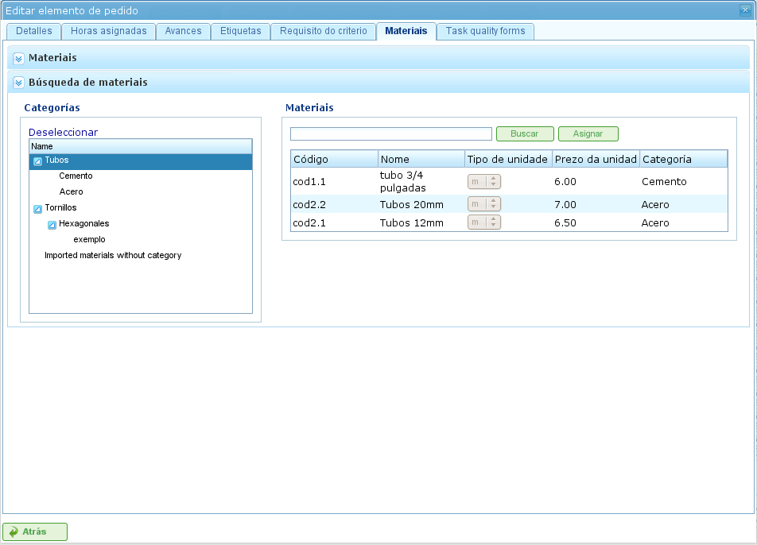

Projecten en Projectelementen
Contents
Projecten vertegenwoordigen het werk dat door gebruikers van het programma moet worden uitgevoerd. Elk project correspondeert met een project dat het bedrijf aan zijn klanten zal aanbieden.
Een project bestaat uit één of meer projectelementen. Elk projectelement vertegenwoordigt een specifiek deel van het te verrichten werk en definieert hoe het werk aan het project moet worden gepland en uitgevoerd. Projectelementen zijn hiërarchisch georganiseerd, zonder beperkingen op de diepte van de hiërarchie. Deze hiërarchische structuur maakt de overerving van bepaalde functies mogelijk, zoals labels.
De volgende secties beschrijven de bewerkingen die gebruikers kunnen uitvoeren met projecten en projectelementen.
Projecten
Een project vertegenwoordigt een project of werk dat door een klant bij het bedrijf wordt aangevraagd. Het project identificeert het project binnen de planning van het bedrijf. In tegenstelling tot uitgebreide beheerprogramma's vereist LibrePlan slechts bepaalde sleutelgegevens voor een project. Deze gegevens zijn:
- Projectnaam: De naam van het project.
- Projectcode: Een unieke code voor het project.
- Totaal projectbedrag: De totale financiële waarde van het project.
- Geschatte startdatum: De geplande startdatum voor het project.
- Einddatum: De geplande voltooiingsdatum voor het project.
- Verantwoordelijke persoon: De persoon die verantwoordelijk is voor het project.
- Beschrijving: Een beschrijving van het project.
- Toegewezen kalender: De kalender die aan het project is gekoppeld.
- Automatisch genereren van codes: Een instelling om het systeem te instrueren automatisch codes te genereren voor projectelementen en uurgroepen.
- Voorkeur tussen afhankelijkheden en beperkingen: Gebruikers kunnen kiezen of afhankelijkheden of beperkingen prioriteit hebben bij conflicten.
Een volledig project omvat echter ook andere gekoppelde entiteiten:
- Aan het project toegewezen uren: De totale uren toegewezen aan het project.
- Aan het project toegeschreven voortgang: De geboekte voortgang op het project.
- Labels: Labels toegewezen aan het project.
- Aan het project toegewezen criteria: Criteria die aan het project zijn gekoppeld.
- Materialen: Materialen die voor het project vereist zijn.
- Kwaliteitsformulieren: Kwaliteitsformulieren die aan het project zijn gekoppeld.
Het aanmaken of bewerken van een project kan worden gedaan vanuit meerdere locaties binnen het programma:
- Vanuit de "Projectlijst" in het bedrijfsoverzicht:
- Bewerken: Klik op de bewerkingsknop voor het gewenste project.
- Aanmaken: Klik op "Nieuw project."
- Vanuit een project in het Gantt-diagram: Schakel over naar de projectdetailsweergave.
Gebruikers hebben toegang tot de volgende tabbladen bij het bewerken van een project:
Projectdetails bewerken: Dit scherm stelt gebruikers in staat basisprojectgegevens te bewerken:
- Naam
- Code
- Geschatte startdatum
- Einddatum
- Verantwoordelijke persoon
- Klant
- Beschrijving

Projecten bewerken
Lijst van projectelementen: Dit scherm stelt gebruikers in staat verschillende bewerkingen uit te voeren op projectelementen:
- Nieuwe projectelementen aanmaken.
- Een projectelement één niveau omhoog in de hiërarchie bevorderen.
- Een projectelement één niveau omlaag in de hiërarchie degraderen.
- Een projectelement inspringen (naar beneden in de hiërarchie verplaatsen).
- Een projectelement uitspringen (naar boven in de hiërarchie verplaatsen).
- Projectelementen filteren.
- Projectelementen verwijderen.
- Een element binnen de hiërarchie verplaatsen door slepen en neerzetten.

Lijst van projectelementen
Toegewezen uren: Dit scherm toont de totale uren die aan het project zijn toegeschreven, waarbij de uren ingevoerd in de projectelementen worden gegroepeerd.

Uren toegeschreven aan het project door medewerkers toewijzen
Voortgang: Dit scherm stelt gebruikers in staat voortgangstypen toe te wijzen en voortgangsmetingen in te voeren voor het project. Zie het gedeelte "Voortgang" voor meer details.
Labels: Dit scherm stelt gebruikers in staat labels toe te wijzen aan een project en eerder toegewezen directe en indirecte labels te bekijken. Zie het volgende gedeelte over het bewerken van projectelementen voor een gedetailleerde beschrijving van labelbeheer.

Projectlabels
Criteria: Dit scherm stelt gebruikers in staat criteria toe te wijzen die van toepassing zullen zijn op alle taken binnen het project. Deze criteria worden automatisch toegepast op alle projectelementen, behalve die welke expliciet ongeldig zijn gemaakt. De uurgroepen van projectelementen, die zijn gegroepeerd op criteria, kunnen ook worden bekeken, waarmee gebruikers de criteria die voor een project vereist zijn kunnen identificeren.

Projectcriteria
Materialen: Dit scherm stelt gebruikers in staat materialen aan projecten toe te wijzen. Materialen kunnen worden geselecteerd uit de beschikbare materiaalkategorieën in het programma. Materialen worden als volgt beheerd:
- Selecteer het tabblad "Materialen zoeken" onderaan het scherm.
- Voer tekst in om naar materialen te zoeken of selecteer de categorieën waarvoor u materialen wilt zoeken.
- Het systeem filtert de resultaten.
- Selecteer de gewenste materialen (meerdere materialen kunnen worden geselecteerd door de toets "Ctrl" ingedrukt te houden).
- Klik op "Toewijzen."
- Het systeem toont de lijst van materialen die al aan het project zijn toegewezen.
- Selecteer de eenheden en de status om aan het project toe te wijzen.
- Klik op "Opslaan" of "Opslaan en doorgaan."
- Om de ontvangst van materialen te beheren, klikt u op "Verdelen" om de status van een gedeeltelijke hoeveelheid materiaal te wijzigen.

Materialen gekoppeld aan een project
Kwaliteit: Gebruikers kunnen een kwaliteitsformulier aan het project toewijzen. Dit formulier wordt vervolgens ingevuld om te zorgen dat bepaalde activiteiten die aan het project zijn gekoppeld worden uitgevoerd. Zie het volgende gedeelte over het bewerken van projectelementen voor details over het beheren van kwaliteitsformulieren.

Kwaliteitsformulier gekoppeld aan het project
Projectelementen Bewerken
Projectelementen worden bewerkt vanuit het tabblad "Lijst van projectelementen" door op het bewerkingspictogram te klikken. Dit opent een nieuw scherm waar gebruikers kunnen:
- Informatie over het projectelement bewerken.
- Uren bekijken die zijn toegeschreven aan projectelementen.
- Voortgang van projectelementen beheren.
- Projectlabels beheren.
- Criteria beheren die vereist zijn door het projectelement.
- Materialen beheren.
- Kwaliteitsformulieren beheren.
De volgende subsecties beschrijven elk van deze bewerkingen in detail.
Informatie over het Projectelement Bewerken
Het bewerken van informatie over het projectelement omvat het wijzigen van de volgende details:
- Naam van het projectelement: De naam van het projectelement.
- Code van het projectelement: Een unieke code voor het projectelement.
- Startdatum: De geplande startdatum van het projectelement.
- Geschatte einddatum: De geplande voltooiingsdatum van het projectelement.
- Totale uren: De totale uren toegewezen aan het projectelement. Deze uren kunnen worden berekend op basis van de toegevoegde uurgroepen of direct worden ingevoerd. Als ze direct worden ingevoerd, moeten de uren worden verdeeld over de uurgroepen en moet een nieuwe uurgroep worden aangemaakt als de percentages niet overeenkomen met de initiële percentages.
- Uurgroepen: Er kunnen één of meer uurgroepen worden toegevoegd aan het projectelement. Het doel van deze uurgroepen is het definiëren van de vereisten voor de resources die zullen worden toegewezen om het werk uit te voeren.
- Criteria: Criteria kunnen worden toegevoegd waaraan moet worden voldaan om generieke toewijzing voor het projectelement mogelijk te maken.

Projectelementen bewerken
Uren Bekijken die zijn Toegeschreven aan Projectelementen
Het tabblad "Toegewezen uren" stelt gebruikers in staat de werkrapporten te bekijken die zijn gekoppeld aan een projectelement en te zien hoeveel van de geschatte uren al zijn voltooid.

Uren toegewezen aan projectelementen
Het scherm is verdeeld in twee delen:
- Werkrapportlijst: Gebruikers kunnen de lijst van werkrapporten bekijken die zijn gekoppeld aan het projectelement, inclusief de datum en tijd, resource en het aantal uren besteed aan de taak.
- Gebruik van geschatte uren: Het systeem berekent het totale aantal uren besteed aan de taak en vergelijkt deze met de geschatte uren.
Voortgang van Projectelementen Beheren
Het invoeren van voortgangstypen en het beheren van voortgang van projectelementen wordt beschreven in het hoofdstuk "Voortgang".
Projectlabels Beheren
Labels, zoals beschreven in het hoofdstuk over labels, stellen gebruikers in staat projectelementen te categoriseren. Dit stelt gebruikers in staat om planning- of projectinformatie te groeperen op basis van deze labels.
Gebruikers kunnen labels rechtstreeks toewijzen aan een projectelement of aan een projectelement van een hoger niveau in de hiërarchie. Zodra een label is toegewezen met een van beide methoden, worden het projectelement en de gerelateerde planningstaken gekoppeld aan het label en kunnen worden gebruikt voor latere filtering.

Labels toewijzen aan projectelementen
Zoals weergegeven in de afbeelding, kunnen gebruikers de volgende acties uitvoeren vanuit het tabblad Labels:
- Geërfde labels bekijken: Bekijk labels die zijn gekoppeld aan het projectelement en zijn geërfd van een projectelement van een hoger niveau. De planningstaken die zijn gekoppeld aan elk projectelement hebben dezelfde gekoppelde labels.
- Rechtstreeks toegewezen labels bekijken: Bekijk labels die rechtstreeks zijn gekoppeld aan het projectelement met het toewijzingsformulier voor labels op lager niveau.
- Bestaande labels toewijzen: Wijs labels toe door ernaar te zoeken in de beschikbare labels in het formulier onder de lijst met directe labels. Om naar een label te zoeken, klikt u op het vergrootglaspictogram of voert u de eerste letters van het label in het tekstvak in om de beschikbare opties weer te geven.
- Nieuwe labels aanmaken en toewijzen: Maak nieuwe labels aan die zijn gekoppeld aan een bestaand labeltype vanuit dit formulier. Om dit te doen, selecteert u een labeltype en voert u de labelwaarde voor het geselecteerde type in. Het systeem maakt het label automatisch aan en wijst het toe aan het projectelement wanneer op "Aanmaken en toewijzen" wordt geklikt.
Criteria Beheren die Vereist zijn door het Projectelement en Uurgroepen
Zowel een project als een projectelement kunnen criteria hebben toegewezen waaraan moet worden voldaan om het werk te kunnen uitvoeren. Criteria kunnen direct of indirect zijn:
- Directe criteria: Deze worden rechtstreeks toegewezen aan het projectelement. Dit zijn criteria die vereist zijn door de uurgroepen op het projectelement.
- Indirecte criteria: Deze worden toegewezen aan projectelementen van een hoger niveau in de hiërarchie en worden geërfd door het element dat wordt bewerkt.
Naast de vereiste criteria kunnen één of meer uurgroepen die deel uitmaken van het projectelement worden gedefinieerd. Dit hangt af van of het projectelement andere projectelementen bevat als onderliggende knooppunten of als het een bladvormig knooppunt is. In het eerste geval kan alleen informatie over uren en uurgroepen worden bekeken. Bladvormige knooppunten kunnen echter worden bewerkt. Bladvormige knooppunten werken als volgt:
- Het systeem maakt een standaard uurgroep aan die is gekoppeld aan het projectelement. De details die kunnen worden gewijzigd voor een uurgroep zijn:
- Code: De code voor de uurgroep (als niet automatisch gegenereerd).
- Criteriumtype: Gebruikers kunnen kiezen of ze een machine- of medewerkerscriterium toewijzen.
- Aantal uren: Het aantal uren in de uurgroep.
- Lijst van criteria: De criteria die op de uurgroep moeten worden toegepast. Om nieuwe criteria toe te voegen, klikt u op "Criterium toevoegen" en selecteert u er één uit de zoekmachine die verschijnt nadat u op de knop hebt geklikt.
- Gebruikers kunnen nieuwe uurgroepen toevoegen met andere kenmerken dan vorige uurgroepen. Een projectelement kan bijvoorbeeld een lasser (30 uur) en een schilder (40 uur) vereisen.

Criteria toewijzen aan projectelementen
Materialen Beheren
Materialen worden in projecten beheerd als een lijst die is gekoppeld aan elk projectelement of een project in het algemeen. De lijst van materialen bevat de volgende velden:
- Code: De materiaalcode.
- Datum: De datum die is gekoppeld aan het materiaal.
- Eenheden: Het vereiste aantal eenheden.
- Eenheidstype: Het type eenheid dat wordt gebruikt om het materiaal te meten.
- Eenheidsprijs: De prijs per eenheid.
- Totale prijs: De totale prijs (berekend door de eenheidsprijs te vermenigvuldigen met het aantal eenheden).
- Categorie: De categorie waartoe het materiaal behoort.
- Status: De status van het materiaal (bijv. Ontvangen, Aangevraagd, In behandeling, Verwerking, Geannuleerd).
Het werken met materialen gaat als volgt:
- Selecteer het tabblad "Materialen" op een projectelement.
- Het systeem toont twee subtabbladen: "Materialen" en "Materialen zoeken."
- Als het projectelement geen toegewezen materialen heeft, zal het eerste tabblad leeg zijn.
- Klik op "Materialen zoeken" in het linkerbenedengedeelte van het venster.
- Het systeem toont de lijst van beschikbare categorieën en bijbehorende materialen.

Zoeken naar materialen
- Selecteer categorieën om de materiaalzoekopdracht te verfijnen.
- Het systeem toont de materialen die tot de geselecteerde categorieën behoren.
- Selecteer in de materialenlijst de materialen om aan het projectelement toe te wijzen.
- Klik op "Toewijzen."
- Het systeem toont de geselecteerde lijst van materialen op het tabblad "Materialen" met nieuwe in te vullen velden.

Materialen toewijzen aan projectelementen
- Selecteer de eenheden, status en datum voor de toegewezen materialen.
Voor het latere bewaken van materialen is het mogelijk de status te wijzigen van een groep eenheden van het ontvangen materiaal. Dit gaat als volgt:
- Klik op de knop "Verdelen" in de materialenlijst rechts van elke rij.
- Selecteer het aantal eenheden om de rij in te verdelen.
- Het programma toont twee rijen met het verdeelde materiaal.
- Wijzig de status van de rij die het materiaal bevat.
Het voordeel van dit verdeelprogramma is de mogelijkheid om gedeeltelijke leveringen van materiaal te ontvangen zonder te hoeven wachten op de volledige levering om het als ontvangen te markeren.
Kwaliteitsformulieren Beheren
Sommige projectelementen vereisen certificering dat bepaalde taken zijn voltooid voordat ze als voltooid kunnen worden gemarkeerd. Dit is waarom het programma kwaliteitsformulieren heeft, die bestaan uit een lijst van vragen die als belangrijk worden beschouwd als ze positief worden beantwoord.
Het is belangrijk op te merken dat een kwaliteitsformulier vooraf moet worden aangemaakt om aan een projectelement te kunnen worden toegewezen.
Om kwaliteitsformulieren te beheren:
Ga naar het tabblad "Kwaliteitsformulieren".

Kwaliteitsformulieren toewijzen aan projectelementen
Het programma heeft een zoekmachine voor kwaliteitsformulieren. Er zijn twee soorten kwaliteitsformulieren: per element of per percentage.
- Element: Elk element is onafhankelijk.
- Percentage: Elke vraag verhoogt de voortgang van het projectelement met een percentage. De percentages moeten kunnen optellen tot 100%.
Selecteer een van de formulieren die zijn aangemaakt in de beheersinterface en klik op "Toewijzen."
Het programma wijst het gekozen formulier toe uit de lijst van formulieren die aan het projectelement zijn toegewezen.
Klik op de knop "Bewerken" op het projectelement.
Het programma toont de vragen uit het kwaliteitsformulier in de onderste lijst.
Markeer de vragen die zijn voltooid als behaald.
- Als het kwaliteitsformulier is gebaseerd op percentages, worden de vragen in volgorde beantwoord.
- Als het kwaliteitsformulier is gebaseerd op elementen, kunnen de vragen in willekeurige volgorde worden beantwoord.